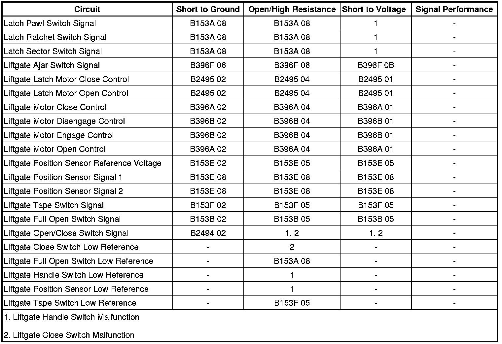

Power Liftgate Malfunction
Power Liftgate Malfunction
Diagnostic Instructions
* Perform the Diagnostic System Check - Vehicle (Initial Inspection and Diagnostic Overview) prior to using this diagnostic procedure.
* Review Strategy Based Diagnosis (Initial Inspection and Diagnostic Overview) for an overview of the diagnostic approach.
* Diagnostic Procedure Instructions (Initial Inspection and Diagnostic Overview) provides an overview of each diagnostic category.
Diagnostic Fault Information

Circuit/System Description
The power liftgate module (PLM) controls operation of the liftgate latch motor and the liftgate actuator assembly. Under normal conditions the power latch can only be unlatched under power from the PLM through an input from the liftgate handle switch or the remote keyless entry (RKE) transmitter, but the liftgate may be manually closed to the primary latched position without the PLM performing the power latch function. The liftgate actuator assembly consists of an actuator drive motor that contains 2 internal hall effect sensors. The drive motor is mated to a gear that is connected to an actuator clutch. When the clutch is engaged the motor rotation is transferred to the clutch gear, intermediate gear, and actuator arm gear. The full open switch is a limit switch mounted on the liftgate actuator assembly along side the actuator arm gear, and will make contact with the cam on the actuator arm gear when the liftgate is near the full open position. The PLM continuously monitors the liftgate location and direction of travel using the 2 hall effect sensors located in the drive motor assembly. The sensors are used to determine when the liftgate has reached the full open and full closed points of travel where the actuator clutch should be disengaged. These positions may vary slightly and must be learned when most liftgate components are serviced.
Diagnostic Aids
Important: Power liftgate operation will be disabled when certain supplemental inflatable restraint (SIR) diagnostic trouble codes (DTCs) are present. Verify with a scan tool that no SIR DTCs are currently present. If any SIR DTCs are present, the SIR system must be diagnosed and repaired before continuing with the following diagnostic procedure.
Power liftgate operation will only be allowed if certain operating criteria are met. When a power open or close cycle can not be initiated or is aborted during mid cycle, the scan tool open or close history data may be helpful in determining a condition that is preventing liftgate operation. The following is the list of scan tool open and close history parameters and their states that will allow normal operation.
* Crank Signal Present (No)
* Door Lock Status (Unlocked)
* Hall Sensor Feed Status (No Output)
* LGM Latch Fault (No)
* LGM Position Out of Range (No)
* Module Over Current Detected (No)
* Object Detection Sensor Status (Inactive)
* Obstacle Detected in Liftgate (No)
* System Operation Status (OK)
* System Voltage (OK)
* Temperature Out of Range (No)
* Vehicle In Park (Yes)
Reference Information
Schematic Reference
Liftgate Schematics (Liftgate Schematics)
Connector End View Reference
Component Connector End Views (Connector Views)
Description and Operation
Liftgate Description and Operation (Description and Operation)
Electrical Information Reference
* Circuit Testing (Component Tests and General Diagnostics)
* Connector Repairs (Component Tests and General Diagnostics)
* Testing for Intermittent Conditions and Poor Connections (Component Tests and General Diagnostics)
* Wiring Repairs (Component Tests and General Diagnostics)
Scan Tool Reference
Control Module References (Programming and Relearning)
Circuit/System Verification
Ignition ON, observe the scan tool liftgate handle sw. status parameter while operating the liftgate handle. The reading should toggle between ACTIVE and INACTIVE.
If the reading does not change between the commanded states, refer to Liftgate Handle Switch Malfunction.
Observe the scan tool liftgate handle sw. status parameter while operating the liftgate close switch. The reading should toggle between ACTIVE and INACTIVE.
If the reading does not change between the commanded states, refer to Liftgate Close Switch Malfunction.
Circuit/System Testing
Liftgate Handle Switch Malfunction
1. Ignition OFF, disconnect the harness connector at the liftgate handle switch.
2. Ignition OFF, test for less than 1.0 ohm of resistance between the ground circuit terminal B and ground.
• If greater than the specified range, test the ground circuit for an open/high resistance. If the circuit tests normal, replace the LGM.
3. Ignition ON, verify with a scan tool the liftgate handle sw. status parameter is INACTIVE.
• If not the specified value, test the signal circuit terminal A for a short to ground. If the circuit tests normal, replace the LGM.
4. Install a 3-amp fused jumper wire between the signal circuit terminal A and ground. Verify the scan tool the liftgate handle sw. status parameter is ACTIVE.
• If not the specified value, test the signal circuit for a short to voltage or an open/high resistance. If the circuits test normal, replace the LGM.
5. If all circuits test normal, test or replace the liftgate handle switch.
Liftgate Close Switch Malfunction
1. Ignition OFF, disconnect the harness connector at the liftgate close switch.
2. Ignition OFF, test for less than 1.0 ohm of resistance between the low reference circuit terminal 2 and ground.
• If greater than the specified range, test the low reference circuit for an open/high resistance. If the circuit tests normal, replace the LGM.
3. Ignition ON, verify with a scan tool the liftgate handle sw. status parameter is INACTIVE.
• If not the specified value, test the signal circuit terminal 1 for a short to ground. If the circuits test normal, replace the LGM.
4. Install a 3-amp fused jumper wire between the signal circuit terminal 1 and ground. Verify the scan tool the liftgate handle sw. status parameter is ACTIVE.
• If not the specified value, test the signal circuit for a short to voltage or an open/high resistance. If the circuits test normal, replace the LGM.
5. If all circuits test normal, test or replace the liftgate close switch.
Component Testing
Liftgate Handle Switch
1. Ignition OFF, disconnect the harness connector at the liftgate handle switch.
2. Test for infinite resistance between the signal terminal A and the low reference terminal B with the switch in the open position.
• If less than infinite resistance, replace the liftgate handle switch.
3. Test for less than 1 ohm between the signal terminal A and the low reference terminal B with the switch in the closed position.
• If greater than 1 ohm, replace the liftgate handle switch.
Liftgate Close Switch
1. Ignition OFF, disconnect the harness connector at the liftgate handle switch.
2. Test for infinite resistance between the signal terminal 1 and the low reference terminal 2 with the switch in the open position.
• If less than infinite resistance, replace the liftgate close switch.
3. Test for less than 1 ohm between the signal terminal 1 and the low reference terminal 2 with the switch in the closed position.
• If greater than 1 ohm, replace the liftgate close switch.
Repair Instructions
Perform the Diagnostic Repair Verification (Verification Tests) after completing the diagnostic procedure.
* Liftgate Outside Handle Replacement (Service and Repair)
* Liftgate Actuator Switch Replacement (Service and Repair)
* Control Module References (Programming and Relearning) for LGM replacement, setup, and programming